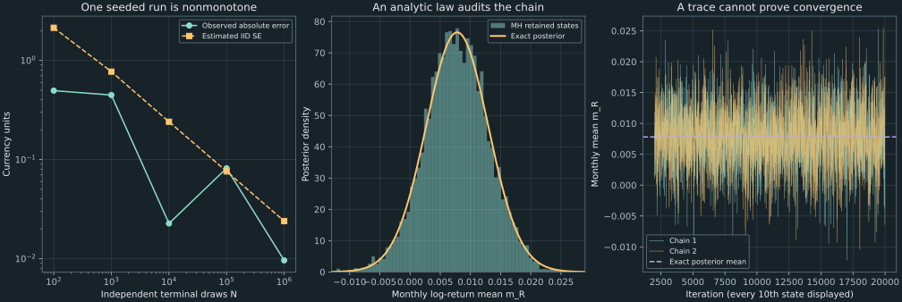
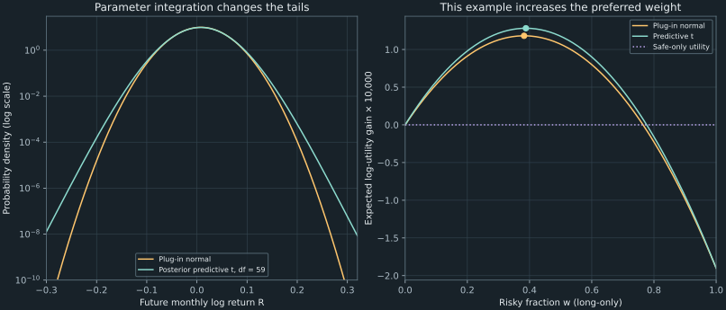

23. Monte Carlo option prices and uncertain parameters
A million simulated terminal stock prices produce a call estimate of 16.72452, compared with the analytic price 16.73413. The estimated standard error is still 0.02394. Those draws test a pricing calculation under a specified probability law. They do not establish the law of future investment returns. When the same averaging machinery is used to choose a portfolio, uncertainty about the return parameters changes the distribution being averaged, while a leveraged portfolio can make logarithmic utility undefined in states that the simulation never visits.
The first running example is the European call used in the source material: stock price and strike both 100, one year to maturity, continuously compounded annual risk-free rate 10%, and annual volatility 30%. We first compute its price and sampling error, then reduce that error without changing the target. The second calculation infers a monthly return model from a small sample and checks a Markov chain against an analytic posterior. Finally, that posterior determines a distribution of future returns and an admissible portfolio decision. In each calculation, the probability law, the function being averaged, and the uncertainty of the average must remain explicit.
Source spine: recordings 69, 70, and the European-pricing and inference portions of 74, together with the corresponding portions of the final R and Python laboratories. The variance-reduction experiments, explicit prior and posterior derivations, analytic sampler audit, and constrained decision benchmark are teaching extensions. Inputs are synthetic or explicitly reconstructed rounded statistics, rather than current market data.
23.1 Choose the pricing law before simulating Recording 69, 1:32
Let $S_0>0$ denote today's stock price and $K>0$ a call's strike, in the same currency units. The call pays $(S_T-K)^+$ at maturity $T>0$, measured in years, where $x^+=\max(x,0)$. Assume a non-dividend-paying stock, constant continuously compounded annual risk-free rate $r$, constant volatility $\sigma_S>0$ per square-root year, and the frictionless trading assumptions used in Chapter 16. Under that model's risk-neutral probability law $Q$, a terminal price has the representation
\[ S_T=S_0\exp\!\left[(r-\tfrac12\sigma_S^2)T+ \sigma_S\sqrt T\,Z\right], \qquad Z\sim N(0,1). \tag{23.1} \]The notation $N(0,1)$ denotes the standard normal distribution, with density $\phi(z)=(2\pi)^{-1/2}e^{-z^2/2}$. The drift correction in (23.1) ensures that the discounted stock has mean $S_0$. To verify it, complete the square in the normal integral. For any real $a$,
\[ E[e^{aZ}] =\int_{\mathbb R}e^{az}\phi(z)\,dz =e^{a^2/2}\int_{\mathbb R}\phi(z-a)\,dz =e^{a^2/2}. \]Consequently $E_Q[e^{-rT}S_T]=S_0e^{-\sigma_S^2T/2}e^{\sigma_S^2T/2}=S_0$. This identity is both a model condition and a numerical check. Replacing $r$ in (23.1) with an estimated historical stock drift changes the expectation. It does not preserve the same no-arbitrage call price merely because the resulting simulation still looks plausible.
Define two scalar observations from one normal draw:
\[ Y(Z)=e^{-rT}(S_T(Z)-K)^+,\qquad X(Z)=e^{-rT}S_T(Z). \tag{23.2} \]The call price is $C=E_Q[Y]$, and $E_Q[X]=S_0$. Both observations have currency units. The first is the quantity to estimate; the second has a known expectation that will later help reduce the first estimate's variance. Their shared random input matters: a separately generated stock observation would generally lose the useful covariance.
The analytic call formula derived in Chapter 16 supplies an independent target for this terminal sampler. With $\Phi(d)=\int_{-\infty}^d\phi(z)\,dz$, define
\[ d_1=\frac{\log(S_0/K)+(r+\sigma_S^2/2)T}{\sigma_S\sqrt T}, \qquad d_2=d_1-\sigma_S\sqrt T,\qquad C=S_0\Phi(d_1)-Ke^{-rT}\Phi(d_2). \tag{23.3} \]For the running inputs, (23.3) gives $C\approx16.734133582387$. Simulation is unnecessary for obtaining this particular price; it is useful for checking a method before applying it to a payoff without this formula. Because the payoff uses only $S_T$, one normal draw per observation is sufficient. A time grid adds work without supplying missing payoff information. The path-dependent contracts in the next chapter require a different input object.
The pricing law $Q$ is a valuation construction. An investor's predictive distribution describes uncertain future outcomes under a physical return model. Neither an empirical frequency nor a posterior over historical-return parameters can be substituted for $Q$ without a separate pricing argument. This distinction resolves the source discussion about risk-neutral versus historical probabilities: changing financing or return assumptions changes the model that must be justified, rather than supplying an arbitrary alternative drift for the same formula.
23.2 Compute a price and its sampling error Recording 69, 5:55 Recording 74, 1:39
Generate independent standard normals $Z_1,\ldots,Z_N$ and evaluate $Y_i=Y(Z_i)$ using (23.1)–(23.2). For $N\geq2$, the price estimate and its estimated standard error are
\[ \widehat C_N=\frac1N\sum_{i=1}^NY_i,\qquad s_Y^2=\frac1{N-1}\sum_{i=1}^N(Y_i-\widehat C_N)^2,\qquad \widehat{\mathrm{SE}}_N=\sqrt{\frac{s_Y^2}{N}}. \tag{23.4} \]Discounting can be applied to every payoff before averaging or to the final average. The sample standard deviation must receive the same discount factor. The finite-variance IID argument in §22.2 gives unbiasedness and variance $\operatorname{Var}(Y)/N$. A lognormal stock has finite moments of every polynomial order; $0\leq Y\leq e^{-rT}S_T$ therefore ensures the required second moment for this call.
The complete program generates one million normal draws using NumPy's PCG64 generator with original teaching seed 2300. The following rows use nested prefixes of that one stream. They are correlated estimates, rather than five independent experiments.
| Draws $N$ | $\widehat C_N$ | Estimated SE | $\widehat C_N-C$ |
|---|---|---|---|
| 100 | 16.238496411 | 2.133976877 | −0.495637171 |
| 1,000 | 17.181656316 | 0.770413088 | 0.447522733 |
| 10,000 | 16.711481663 | 0.240583980 | −0.022651920 |
| 100,000 | 16.815836356 | 0.075931960 | 0.081702774 |
| 1,000,000 | 16.724522596 | 0.023936010 | −0.009610987 |
The absolute error increases between the third and fourth rows even while the estimated standard error falls. Consistency does not require a particular realization's error to decrease at every sample size. Nor does a million draws guarantee a correctly rounded price to two decimal places. Here the exact formula lets us observe the realized error; without it, a reported standard error describes repeated-sampling variation under the declared model, rather than the unknown realized error itself.
A seed initializes a pseudorandom generator. Reproducing exact values also requires compatible generator and distribution implementations, numerical environment, and the same sequence of calls. An identical integer passed to R's generator and NumPy's generator does not establish identical samples. The corresponding R and Python labs implement the same normal-to-stock-to-payoff-to-discount calculation, but their individual price traces need not coincide. The NumPy compatibility policy makes this narrower reproducibility contract explicit.
A five-draw workshop exposes the denominator
The second source contract has strike 90, maturity one year, and annual rate 0.06. Its supplied terminal observations are $72,88,96,110,134$. Their undiscounted call payoffs are $0,0,6,20,44$, whose mean is 14. The squared deviations from that mean sum to
\[ 14^2+14^2+8^2+6^2+30^2=1392. \]Thus the sample payoff variance is $1392/(5-1)=348$, not $1392/5$. Multiplying payoffs by $e^{-0.06}$ multiplies their variance by $e^{-0.12}$. Equation (23.4) gives
\[ \widehat C_5=14e^{-0.06}\approx13.184703470,\qquad \widehat{\mathrm{SE}}_5 =e^{-0.06}\sqrt{\frac{348}{5}} \approx7.856822665. \tag{23.5} \]For stock price 94 and volatility 0.30, (23.3) gives approximately 15.900235601292 for this contract. The gap between that benchmark and (23.5) is only about 0.345627265 estimated standard errors. Such a noisy five-observation estimate has little ability to expose an implementation defect. Agreement within a wide error scale supports neither a claim of precise pricing nor a proof that the simulator is correct. Five skewed payoff observations also do not justify an exact normal or Student-$t$ confidence interval for the unknown call price.
A pilot run is an initial simulation used to plan subsequent computation. Treating its estimated variance as a planning input, a target standard error of 0.1 requires the total draw count
\[ N_{\mathrm{plan}} =\left\lceil\frac{348e^{-0.12}}{0.1^2}\right\rceil =30865. \tag{23.6} \]The ceiling denotes the smallest integer no smaller than its argument. This is a total count under the unchanged-variance approximation, rather than 30,865 additional draws. The estimate of variance itself is uncertain, especially with five observations, so the next run's reported standard error need not equal 0.1. Reducing estimator variance can be more effective than multiplying the number of observations; the next section changes the observations while preserving their expectation.
23.3 Reduce variance without changing the price Recording 74, 8:46
Variance reduction constructs a new observation with the same mean and a smaller variance. It leaves the financial contract and pricing law unchanged. This section develops two such constructions for the running call. They extend the source's motivation for more efficient simulation; Haugh's variance-reduction notes, printed pages 3–4 and 7–9, give the control-variate and antithetic sampling frameworks.
Antithetic observations use opposite normal draws
Since $-Z$ has the same standard normal law as $Z$, both $Y(Z)$ and $Y(-Z)$ have expectation $C$. Define an antithetic pair as these two coupled payoff evaluations and let their average be $A(Z)=[Y(Z)+Y(-Z)]/2$. Generate $M$ independent normal draws and average the resulting $M$ independent pair averages. Linearity gives $E[A]=C$, while
\[ \operatorname{Var}(A) =\frac{\operatorname{Var}(Y)+ \operatorname{Cov}(Y(Z),Y(-Z))}{2}. \tag{23.7} \]The covariance is nonpositive for the call. To prove the sign, let $Z'$ be an independent copy of $Z$, put $f(z)=Y(z)$ and $g(z)=Y(-z)$, and expand the product
\[ E[(f(Z)-f(Z'))(g(Z)-g(Z'))] =2\operatorname{Cov}(f(Z),g(Z)). \]The function $f$ is nondecreasing and $g$ is nonincreasing. Their two differences therefore have opposite signs or one is zero, for every pair of inputs. The product is nonpositive, which proves the covariance claim. This argument requires the finite second moments that hold here. For a nonmonotone payoff the sign needs another argument; pairing opposite normals alone does not guarantee improvement.
At the same budget of $2M$ payoff evaluations, the variance of an ordinary IID average is $\operatorname{Var}(Y)/(2M)$. The antithetic estimate instead has variance $\operatorname{Var}(Y)/(2M)+\operatorname{Cov}(Y(Z),Y(-Z))/(2M)$. Thus a negative covariance improves precision at that payoff budget. The standard error must be calculated from the $M$ pair averages. Treating the $2M$ correlated individual payoffs as independent would apply the wrong variance formula.
A control variate subtracts a mean-zero correlated quantity
For the same pair, let $B(Z)=[X(Z)+X(-Z)]/2$ be its average discounted stock value. Equation (23.2) gives $E[B]=S_0$. A control variate uses that known mean to construct
\[ H=A-b(B-S_0),\qquad E[H]=C \tag{23.8} \]for a fixed real coefficient $b$. With $\operatorname{Var}(B)>0$, expanding its variance and completing the square gives
\[ \begin{aligned} \operatorname{Var}(H) &=\operatorname{Var}(A)-2b\operatorname{Cov}(A,B) +b^2\operatorname{Var}(B),\\ b_*&=\frac{\operatorname{Cov}(A,B)}{\operatorname{Var}(B)},\\ \operatorname{Var}(H) &=\operatorname{Var}(A)(1-\rho^2) +\operatorname{Var}(B)(b-b_*)^2, \end{aligned} \tag{23.9} \]where $\rho=\operatorname{Cov}(A,B)/\sqrt{\operatorname{Var}(A)\operatorname{Var}(B)}$ is their correlation, assuming both variances are positive. A control helps because the part of $A$ linearly associated with $B$ can be removed without changing its mean. The coefficient $b_*$ is a regression slope between two simulated observations. It is not the call's delta, which differentiates price with respect to current stock price.
The unknown covariance can be estimated in a pilot. The program uses 20,000 independent pilot pairs to estimate $\widehat b$, then freezes that value and generates 100,000 new production pairs. Conditional on the pilot, the production pairs still have $E[A]=C$ and $E[B]=S_0$. Hence $E[H\mid\text{pilot}]=C$, establishing conditional unbiasedness. Using the same observations to fit and evaluate a coefficient requires a different finite-sample analysis. Equation (23.9) also shows why a poorly estimated coefficient can increase variance: a random pilot slope is not guaranteed to equal $b_*$.
| Original seed-2301 experiment | Production estimate | Estimated SE |
|---|---|---|
| 100,000 antithetic pair averages | 16.774786528 | 0.038661143 |
| Same production pairs, independent-pilot control | 16.721428482 | 0.008675859 |
The fitted coefficient is $\widehat b\approx1.859080347$. Production standard errors use the sample variances of $A$ and $H$, respectively, divided by 100,000 before taking square roots. These estimates share production draws and are correlated. Including the pilot, the controlled run uses 120,000 independent normal inputs and 240,000 payoff evaluations. Those counts describe this implementation's sampling work, not measured execution time or a universal speed ratio. The analytic price remains the same target throughout.
23.4 Infer uncertain monthly-return parameters Recording 70, 2:55
A portfolio decision needs a model of future investment outcomes. Suppose observed monthly log returns $R_1,\ldots,R_n$ are conditionally IID normal with unknown mean $m_R\in\mathbb R$ and variance $v_R>0$. Write $\sigma_R=\sqrt{v_R}$ for their monthly standard deviation. These are physical-return parameters for a one-month horizon. They are distinct from the annual risk-neutral drift and volatility in (23.1).
Bayesian inference combines a likelihood, describing the observations conditional on parameters, with a prior density on those parameters. Their normalized product is the posterior density, conditional on the observed data $\mathcal D$. The prior's coordinate measure must be specified. Here we choose a density constant with respect to $dm_R\,d\log\sigma_R$. Since $d\log\sigma_R=dv_R/(2v_R)$, the same prior has density proportional to $1/v_R$ with respect to $dm_R\,dv_R$. It is improper as a prior: its integral over the entire parameter space is infinite. A proper posterior must therefore be established rather than assumed.
This is the specific noninformative-prior construction treated in Gelman and coauthors, Bayesian Data Analysis, third edition, §3.2, printed pages 64–66. The word “flat” alone would not select it: a density constant in $v_R$ differs from one constant in $\log\sigma_R$. The following calculation states the measure explicitly and derives the relevant laws.
Define the sample mean $\bar R=n^{-1}\sum_iR_i$, residual sum of squares $S=\sum_i(R_i-\bar R)^2$, and sample variance $s^2=S/(n-1)$. Expanding around $\bar R$ gives
\[ \sum_{i=1}^n(R_i-m_R)^2 =S+n(m_R-\bar R)^2, \tag{23.10} \]because the cross term contains $\sum_i(R_i-\bar R)=0$. The normal likelihood contributes $v_R^{-n/2}$ times the exponential of minus this sum divided by $2v_R$. Multiplication by the prior gives the joint posterior kernel, with respect to $dm_R\,dv_R$,
\[ p(m_R,v_R\mid\mathcal D)\ \propto\ v_R^{-(n+2)/2} \exp\!\left[-\frac{S+n(m_R-\bar R)^2}{2v_R}\right]. \tag{23.11} \]A kernel specifies a density up to a positive normalizing constant independent of its arguments. At fixed $v_R$, (23.11) is a normal density in $m_R$ with mean $\bar R$ and variance $v_R/n$. Integrating its Gaussian exponential over $m_R$ contributes $\sqrt{2\pi v_R/n}$. The marginal variance density is consequently proportional to $v_R^{-(n+1)/2}e^{-S/(2v_R)}$.
Define the inverse-gamma law before sampling it
For shape $\alpha_{\mathrm{IG}}>0$ and scale $\beta_{\mathrm{IG}}>0$, define the inverse-gamma distribution by the density
\[ f(v)=\frac{\beta_{\mathrm{IG}}^{\alpha_{\mathrm{IG}}}} {\Gamma(\alpha_{\mathrm{IG}})} v^{-\alpha_{\mathrm{IG}}-1}e^{-\beta_{\mathrm{IG}}/v}, \qquad v>0. \tag{23.12} \]The gamma function is $\Gamma(a)=\int_0^\infty t^{a-1}e^{-t}\,dt$ for $a>0$. Substitution $t=\beta_{\mathrm{IG}}/v$ in (23.12) proves normalization. Comparing exponents with (23.11) yields
\[ \begin{aligned} v_R\mid\mathcal D &\sim\operatorname{IG}\!\left(\frac{n-1}{2},\frac S2\right),\\ m_R\mid v_R,\mathcal D &\sim N\!\left(\bar R,\frac{v_R}{n}\right). \end{aligned} \tag{23.13} \]The posterior is proper for $n\geq2$ and $S>0$. The exponential controls the variance integral near zero when $S>0$, and the power at infinity is integrable when $n>1$. If $S=0$, the marginal kernel has no exponential suppression at zero and the integral diverges for $n>1$. If $n=1$, even its integral at infinity diverges. A degenerate data sample cannot be repaired by treating this improper prior as if it were already a probability distribution.
The marginal law of $v_R$ in (23.13) has integrated out $m_R$. It differs from the full conditional needed in a Gibbs sampler, which holds $m_R$ fixed:
\[ v_R\mid m_R,\mathcal D \sim\operatorname{IG}\!\left(\frac n2, \frac{S+n(m_R-\bar R)^2}{2}\right). \tag{23.14} \]A Gibbs sampler alternates draws from such full conditional laws. An independent joint sampler instead draws $v_R$ from its marginal in (23.13), then $m_R$ from its conditional given that variance. The second draw depends on the first; the two parameters are not independent. Repeating this marginal-then-conditional construction independently produces IID joint posterior draws.
A rounded-statistic benchmark supplies exact checks
Use $n=60$, $\bar R=0.00781$, and sample standard deviation $s=0.0402$, with the $n-1$ denominator. These reconstruct a benchmark from the rounded statistics displayed in recording 70. The original sixty observations, complete random-number stream, and proposal scales are not specified sufficiently to reproduce the source's exact displayed chain. The original experiments below use declared seeds and this explicitly reconstructed posterior.
Here $S=59(0.0402)^2=0.09534636$, $\alpha_{\mathrm{IG}}=29.5$, and $\beta_{\mathrm{IG}}=0.04767318$. More generally, substituting $t=\beta_{\mathrm{IG}}/v$ into the moment integral gives
\[ E[v_R^p\mid\mathcal D] =\beta_{\mathrm{IG}}^p \frac{\Gamma(\alpha_{\mathrm{IG}}-p)} {\Gamma(\alpha_{\mathrm{IG}})}, \qquad p<\alpha_{\mathrm{IG}}. \tag{23.15} \]The stated condition controls the large-variance tail. Taking $p=1$ gives $E[v_R]=\beta_{\mathrm{IG}}/(\alpha_{\mathrm{IG}}-1)$; taking $p=1/2$ gives $E[\sigma_R]$. Conditional expectation gives $E[m_R]=\bar R$, and the conditional variance identity gives $\operatorname{Var}(m_R)=E[v_R]/n$. Finally $\operatorname{Var}(\sigma_R)=E[v_R]-E[\sigma_R]^2$. The moments in the following table all exist because $\alpha_{\mathrm{IG}}>1$.
| Posterior quantity | Analytic value |
|---|---|
| $E[m_R\mid\mathcal D]$ | 0.007810000000 |
| $\operatorname{SD}(m_R\mid\mathcal D)$ | 0.005280061802 |
| $E[v_R\mid\mathcal D]$ | 0.001672743158 |
| $E[\sigma_R\mid\mathcal D]$ | 0.040720202436 |
| $\operatorname{SD}(\sigma_R\mid\mathcal D)$ | 0.003822076848 |
The posterior standard deviation measures uncertainty about a parameter after observing these data. It is not the Monte Carlo standard error of an estimate of that parameter's posterior mean. The former remains fixed as simulation effort increases; the latter can shrink with more effective sampling.
A direct sampler follows from (23.12). Draw $G$ with density $g^{\alpha_{\mathrm{IG}}-1}e^{-g}/\Gamma(\alpha_{\mathrm{IG}})$ for $g>0$, a gamma law with unit rate. Set $v_R=\beta_{\mathrm{IG}}/G$, then draw $m_R=\bar R+\sqrt{v_R/n}\,Z$ with an independent standard normal $Z$. A seed-2302 run of 100,000 such pairs gives sample means 0.007810129 for $m_R$ and 0.040707915 for $\sigma_R$. The known laws and moments make this tractable case a useful audit of a more general Markov-chain algorithm.
23.5 Construct a Markov chain with the desired stationary law Recording 70, 7:34 Recording 74, 12:36
A Markov chain is a sequence of random states whose next-state distribution, conditional on the full past, depends only on the current state. A distribution is stationary for a transition rule if starting with that distribution leaves it unchanged after one transition. Markov chain Monte Carlo, abbreviated MCMC, constructs a chain with a desired stationary distribution and uses its states to estimate expectations. Consecutive states generally remain dependent.
Let $\pi(x)$ be a target density, possibly known only up to a common positive multiplier. Starting at a state with positive finite target density, generate a candidate $y$ from a proposal density $q(y\mid x)$. The Metropolis–Hastings acceptance probability is
\[ a(x,y)=\min\!\left(1, \frac{\pi(y)q(x\mid y)}{\pi(x)q(y\mid x)}\right). \tag{23.16} \]For a generated candidate with positive proposal density, a zero reverse density or zero target density gives acceptance probability zero. Generate an independent $U\sim\operatorname{Uniform}(0,1)$. If $U\leq a(x,y)$, the next state is $y$; otherwise it is the existing state $x$. Rejection therefore creates another observation equal to the current state. It does not remove a transition from the chain.
The reverse-proposal factor establishes detailed balance, equality of stationary probability flow in opposite directions. For distinct states with positive relevant densities,
\[ \pi(x)q(y\mid x)a(x,y) =\min\{\pi(x)q(y\mid x),\pi(y)q(x\mid y)\} =\pi(y)q(x\mid y)a(y,x). \tag{23.17} \]The rejected mass stays on the diagonal $x=y$ and balances itself. Integrating the equality of flows over starting states shows that a normalized $\pi$ remains invariant after a full transition. Its unknown common multiplier cancels from (23.16). This proves stationarity of the constructed law, not that an arbitrary initialization reaches it accurately within a specified finite run. Hastings (1970), printed pages 99–100, develops the transition framework and its relation to the Metropolis rule.
Retain rejected states in the hand-worked trace
The source workshop supplies a one-dimensional target kernel $k$, a density proportional to the target, and a symmetric proposal. The common proposal factors then cancel. The relevant values are $k(0.008)=2.4$, $k(0.010)=2$, $k(0.011)=2.2$, $k(0.012)=1.6$, and $k(0.014)=0.8$. Starting at 0.010, use the supplied candidates and uniforms in order:
| Candidate | Acceptance probability | Uniform | Decision | Next retained state |
|---|---|---|---|---|
| 0.012 | $1.6/2=0.8$ | 0.53 | Accept | 0.012 |
| 0.008 | $\min(1,2.4/1.6)=1$ | 0.91 | Accept | 0.008 |
| 0.014 | $0.8/2.4=1/3$ | 0.67 | Reject | 0.008 |
| 0.011 | $2.2/2.4=11/12$ | 0.24 | Accept | 0.011 |
The last ratio uses 0.008 as the current state because the preceding proposal was rejected. The retained sequence is $(0.012,0.008,0.008,0.011)$. An independently accepted sample in the rejection sampler of Chapter 22 starts a fresh proposal experiment. An MH rejection instead repeats the current state and changes its occupancy count. Keeping only accepted moves would generally estimate expectations under a different distribution.
The following complete miniature reproduces the supplied trace. It takes the target table and deterministic proposal/uniform sequences as inputs; it draws no random numbers and writes no files. It demonstrates acceptance bookkeeping, rather than claiming that four transitions approximate a stationary distribution.
kernel = {0.008: 2.4, 0.010: 2.0, 0.011: 2.2, 0.012: 1.6, 0.014: 0.8}
candidates = [0.012, 0.008, 0.014, 0.011]
uniforms = [0.53, 0.91, 0.67, 0.24]
current = 0.010
states = []
for candidate, uniform in zip(candidates, uniforms, strict=True):
probability = min(1.0, kernel[candidate] / kernel[current])
if uniform <= probability:
current = candidate
states.append(current)
assert states == [0.012, 0.008, 0.008, 0.011]
print(states)Transform the variance and its density together
To explore the joint posterior (23.11), use coordinates $(m_R,\eta_R)$ with $\eta_R=\log v_R$. A Gaussian random walk in these coordinates proposes $m_R'=m_R+\delta_mZ_1$ and $\eta_R'=\eta_R+\delta_\eta Z_2$, with independent standard normals and fixed positive proposal scales $\delta_m,\delta_\eta$. The proposal is symmetric in these two coordinates, and $e^{\eta_R'}$ is positive for every finite candidate.
Symmetry must be matched to a density in the same coordinate measure. Since $dv_R=e^{\eta_R}d\eta_R$, multiply (23.11) by this Jacobian before taking its logarithm. Up to a constant, the transformed log density is
\[ \ell(m_R,\eta_R) =-\frac n2\eta_R -\frac12\left[S+n(m_R-\bar R)^2\right]e^{-\eta_R}. \tag{23.18} \]The power changes from $v_R^{-(n+2)/2}$ to $v_R^{-n/2}$ because the density's coordinate volume changed. Omitting the Jacobian would target another posterior even though the proposed variance remained positive. Conversely, a proposal symmetric directly in $v_R$ cannot silently use symmetry in $\log v_R$.
The program compares $\log U$ with $\min(0,\ell_{\mathrm{new}}-\ell_{\mathrm{old}})$, avoiding direct ratios of very small densities. It stores the current pair after every acceptance or rejection. Invalid initial states are rejected as inputs; nonfinite or numerically out-of-range proposed log targets receive zero acceptance in the declared moderate-input implementation. These choices implement the transition after its target and coordinate measure have been derived.
23.6 Measure error in a correlated chain Recording 70, 12:31
A stationary law does not make successive states independent. Let $h_t$ be a scalar function of the state at iteration $t$, and suppose a stationary chain gives it finite variance. Define the lag-$k$ autocovariance $\gamma_k=\operatorname{Cov}(h_t,h_{t+k})$; stationarity makes this independent of $t$. Expanding the variance of an average of $L$ states and counting pairs at each lag yields
\[ \operatorname{Var}\!\left(\frac1L\sum_{t=1}^Lh_t\right) =\frac{\gamma_0}{L} +\frac{2}{L^2}\sum_{k=1}^{L-1}(L-k)\gamma_k. \tag{23.19} \]There are $L-k$ pairs separated by lag $k$. The IID formula retains only $\gamma_0/L$ and misses all the other terms. Positive serial covariance can therefore make the IID standard error much too small. Negative covariance can reduce variance, so dependence is not synonymous with an increase; the full covariance sum determines the result.
If $\sum_{k\geq1}|\gamma_k|<\infty$, multiplying (23.19) by $L$ and taking a dominated limit gives the long-run variance $\gamma_0+2\sum_{k\geq1}\gamma_k$. This variance limit alone is not a chain central limit theorem. Distributional error intervals require additional conditions on the chain. When the long-run variance is positive and $\gamma_0>0$, its ratio to $\gamma_0$ describes how many correlated states have the same asymptotic variance as an IID sample. Estimating that ratio reliably is itself a statistical problem.
Batch means provide a qualified error diagnostic
Divide the retained series into $B_{\mathrm{batch}}$ nonoverlapping blocks of length $b_{\mathrm{batch}}$. Let $\bar h_j$ denote the mean in block $j$, and $\bar h_{\mathrm{batch}}$ their average. A batch-means standard error is
\[ \widehat{\mathrm{SE}}_{\mathrm{batch}} =\sqrt{\frac{1}{B_{\mathrm{batch}}(B_{\mathrm{batch}}-1)} \sum_{j=1}^{B_{\mathrm{batch}}} (\bar h_j-\bar h_{\mathrm{batch}})^2}. \tag{23.20} \]If blocks are sufficiently long relative to the correlation scale, their means can behave approximately like independent observations. Their sample variance divided by the number of blocks then estimates the variance of the overall average. Too-short blocks can leave substantial correlation between block means; too few blocks make the variance estimate unstable. Hastings (1970), printed pages 98–100 and 104–105, discusses serial dependence, batching, and checks against tractable distributions. Equation (23.20) is a classical nonoverlapping-batch diagnostic, not an implementation of a modern multichain effective-sample-size estimator.
The original experiment runs two chains for 20,000 transitions each, discarding the first 2,000 states of each as warmup. The initial means are $\bar R-0.03$ and $\bar R+0.03$; the initial variances are $s^2/2$ and $2s^2$. Both use proposal scales $\delta_m=0.006$, $\delta_\eta=0.22$, with seeds 2303 and 2304. Each retained series has 18,000 states, partitioned into 60 batches of length 300. The acceptance fractions below refer to all 20,000 transitions, including warmup.
| Quantity | Chain 1 | Chain 2 | Analytic posterior mean |
|---|---|---|---|
| Acceptance fraction | 0.494500 | 0.494250 | Not a posterior moment |
| Mean of $m_R$ | 0.007732921 | 0.007764157 | 0.007810000 |
| Batch SE for mean of $m_R$ | 0.000102893 | 0.000122028 | — |
| Mean of $\sigma_R$ | 0.040731270 | 0.040728148 | 0.040720202 |
| Batch SE for mean of $\sigma_R$ | 0.000090889 | 0.000082480 | — |
The differences from the analytic means are small relative to these estimated errors. That comparison is more informative than agreement with an acceptance-rate rule. Large acceptance can result from tiny proposals and slow exploration; small acceptance can leave long stretches of repeated states. A range such as 20–40% is not a universal correctness condition. The source's particular acceptance fraction and warmup length describe its experiment, rather than a guarantee for every posterior and proposal.
Likewise, a trace that appears stable cannot establish that all relevant regions have been explored. Detailed balance, movement between states, sufficient coverage, and finite-run accuracy are separate questions. A transition rule that never moves has every distribution stationary, yet reveals nothing about its intended target from one initialization. In practical problems, dispersed chains, changing run lengths, diagnostics for the actual estimand, and domain knowledge all contribute evidence. Here the analytic posterior and independent sampler provide additional checks that would be unavailable for a general posterior.
The numerical checks use every retained state, including repeated values. Displaying a thinner selection in a plot only improves visual legibility; it must not silently replace the series used to calculate means or uncertainties. The program's batch errors are diagnostic estimates under mixing assumptions. They are not certified finite-run error bounds or a proof that 2,000 discarded states were sufficient.
23.7 Integrate the posterior to predict a future return Recording 70, 18:12
A posterior describes uncertain parameters; a posterior predictive distribution describes a new outcome after averaging its conditional law over that posterior. Let $R_{\mathrm{new}}$ be the next monthly log return. Conditional on $(m_R,v_R)$, assume it is normal with mean $m_R$ and variance $v_R$, independent of the observed returns. To simulate one predictive return, draw a posterior pair, then draw $R_{\mathrm{new}}=m_R+\sqrt{v_R}\,Z$ with a new independent standard normal.
The conditional law in (23.13) lets us integrate $m_R$ analytically first. At fixed variance, its posterior uncertainty contributes another independent normal term of variance $v_R/n$. Thus
\[ R_{\mathrm{new}}\mid v_R,\mathcal D \sim N\!\left(\bar R,a_Rv_R\right), \qquad a_R=1+\frac1n. \tag{23.21} \]The factor $a_R$ separates the variance of a new outcome from uncertainty about its mean. Plugging in $\bar R$ and $s$ discards that second contribution and the uncertainty about variance. Integrating the inverse-gamma variance mixture supplies the full predictive law.
Put $d=R_{\mathrm{new}}-\bar R$ and abbreviate the shape and scale in (23.13) by $\alpha_{\mathrm{IG}}$ and $\beta_{\mathrm{IG}}$. Multiplying the normal density in (23.21) by the inverse-gamma density gives an integral proportional to
\[ \int_0^\infty v^{-\alpha_{\mathrm{IG}}-3/2} \exp\!\left[-\frac{\beta_{\mathrm{IG}}+d^2/(2a_R)}{v}\right]\,dv. \]The same substitution as in (23.15), now with shape $\alpha_{\mathrm{IG}}+1/2$, evaluates the integral. Keeping the constants gives
\[ f_{\mathrm{pred}}(\bar R+d) =\frac{\Gamma(\alpha_{\mathrm{IG}}+1/2)} {\Gamma(\alpha_{\mathrm{IG}}) \sqrt{2\pi a_R\beta_{\mathrm{IG}}}} \left(1+\frac{d^2}{2a_R\beta_{\mathrm{IG}}}\right)^{ -\alpha_{\mathrm{IG}}-1/2}. \tag{23.22} \]Define the standard Student-$t$ density with $\nu>0$ degrees of freedom by
\[ t_\nu(z)= \frac{\Gamma((\nu+1)/2)}{\sqrt{\nu\pi}\,\Gamma(\nu/2)} \left(1+\frac{z^2}{\nu}\right)^{-(\nu+1)/2}. \tag{23.23} \]A location-scale version has density $t_\nu((R-\bar R)/\tau_R)/\tau_R$. Comparing (23.22) with (23.23) gives $\nu=n-1$ and $\tau_R=s\sqrt{1+1/n}$. For the reconstructed benchmark, $\nu=59$ and $\tau_R\approx0.040533615679$. The scale $\tau_R$ is not its standard deviation; when $\nu>2$, that standard deviation is $\tau_R\sqrt{\nu/(\nu-2)}$, as follows from the moment calculation below.
The marginal posterior of $m_R$ is a different Student-$t$ law. Apply the same mixture integral to $m_R\mid v_R,\mathcal D$ with conditional variance $v_R/n$: its location is $\bar R$, degrees of freedom are again $n-1$, and scale is $s/\sqrt n$. This is uncertainty about a mean, rather than the spread of a future return. Figure 23.1 compares the chain against that exact marginal density. The prediction formulas also agree with Gelman and coauthors, §3.2, printed pages 64–66.

Polynomial tails impose a pricing boundary
For large positive $z$, (23.23) is proportional to $z^{-(\nu+1)}$. For nonnegative $p$, this polynomial decay allows the absolute moment $E[|Z|^p]$ only for $p<\nu$. In particular, the benchmark has many finite ordinary moments. It nevertheless has no finite positive exponential moment:
\[ E[e^{R_{\mathrm{new}}}\mid\mathcal D]=\infty. \tag{23.24} \]To see this, bound its positive-tail density below by a positive constant times $R^{-(\nu+1)}$ once $R$ is sufficiently large. The integral of $e^R/R^{\nu+1}$ on that tail diverges because exponential growth eventually dominates every polynomial. Changing a finite location or a positive scale does not remove this divergence.
Thus exponentiating this physical predictive log return does not create a finite-mean stock law suitable for (23.1) merely by adding a constant drift adjustment. Expected logarithmic utility can still be finite because it grows much more slowly. The existence of one expectation does not establish the existence of every financial expectation under the same distribution.
A different construction can preserve a risk-neutral stock expectation while mixing variances. Suppose a finite nonnegative annual variance $V$ is random under a separately specified law $Q$, and conditional on it set $S_T=S_0\exp[(r-V/2)T+\sqrt{VT}\,Z]$, with an independent standard normal. Completing the square conditionally gives $E_Q[e^{-rT}S_T\mid V]=S_0$ for each $V$. Averaging this nonnegative quantity preserves $E_Q[e^{-rT}S_T]=S_0$. Here the mean correction changes with the variance. This is a different conditional pricing construction, rather than the physical predictive $t$ law shifted by a constant.
23.8 Establish positive wealth before optimizing utility Recording 74, 19:06
Normalize initial wealth to one. Let $w$ be the fraction invested in the risky asset, and let $r_f$ be the safe asset's log return over the same horizon as the risky log return $R$. The terminal gross wealth and logarithmic utility are
\[ G(w,R)=(1-w)e^{r_f}+we^R,\qquad u(w,R)=\log G(w,R). \tag{23.25} \]For the monthly inference model, both returns refer to one month; $r_f$ is not the annual pricing rate $r$. A different positive initial wealth adds a constant to log utility and leaves the preferred fraction unchanged, provided the feasible fractions remain the same. Log utility requires strictly positive terminal wealth in every state in which it is evaluated.
If the return law has full real support, as the normal and predictive Student-$t$ laws do, the fractions guaranteeing positive wealth are exactly
\[ 0\leq w\leq1. \tag{23.26} \]For these fractions, (23.25) is a convex combination of two positive gross returns and is positive. For $w>1$, the limit as $R\to-\infty$ is $(1-w)e^{r_f}<0$. An entire lower-tail interval therefore has negative wealth and positive probability. For $w<0$, wealth becomes negative as $R\to+\infty$, again on an interval with positive probability. Thus allowing leverage or shorting under these full-support laws needs a different wealth/solvency contract. A finite simulation that happens to avoid the bad tail does not establish admissibility.
Discarding nonpositive-wealth draws is not a repair. It conditions the return law on a weight-dependent survival event and changes the objective. Assigning a finite utility to such draws also defines another preference model. The program instead enforces (23.26) for unbounded log-return laws. It computes interior log wealth as logaddexp(log(1-w)+r_f, log(w)+R), with separate endpoint formulas $u(0,R)=r_f$ and $u(1,R)=R$. This avoids exponentiating extreme returns merely to take a logarithm again.
Risk aversion is a statement about wealth
Differentiate (23.25) where wealth is positive. The first and second weight derivatives are
\[ u_w=\frac{e^R-e^{r_f}}{G(w,R)},\qquad u_{ww}=-\frac{(e^R-e^{r_f})^2}{G(w,R)^2}\leq0. \tag{23.27} \]The expected objective is strictly concave in $w$ when the risky gross return differs from the safe gross return with positive probability. However, curvature with respect to log return is different:
\[ u_{RR}=\frac{w(1-w)e^{r_f+R}}{G(w,R)^2}. \tag{23.28} \]For $0<w<1$, this is positive. A mean-preserving spread in log returns can therefore raise expected log utility at a fixed interior fraction. Concavity of $\log G$ in wealth does not imply concavity in every parameter used to describe wealth. In particular, preserving $E[R]$ does not preserve $E[e^R]$.
A bounded workshop permits a different leverage domain
The source's finite example uses safe log return $r_f=0.02$ over its declared investment horizon. Its first risky law assigns probability one half to each of $R=-0.1$ and $R=0.3$. The second law adds an independent shock taking values $\pm0.15$ with equal probabilities. Its four equally likely log returns are $-0.25,0.15,0.05,0.45$. Both laws have $E[R]=0.1$. Yet independence gives $E[e^{R+\varepsilon}]=E[e^R]\cosh(0.15)>E[e^R]$, where $\varepsilon$ denotes that shock and $\cosh(x)=(e^x+e^{-x})/2$.
Because these supports are bounded, $w=3$ can be admissible for this example even though it fails for a full-support normal or $t$ law. The smallest gross wealth in the four-state example is $3e^{-0.25}-2e^{0.02}>0$. For nonnegative $w$, the more general constraint at that smallest return is $w<1/(1-e^{-0.27})$. The program checks wealth in every possible finite-support state before calculating the log.
| Fraction $w$ | Two-state expected utility | Four-state expected utility |
|---|---|---|
| 1 | 0.100000000000 | 0.100000000000 |
| 3 | 0.151680477879 | 0.059559669048 |
At $w=1$, utility is exactly $R$, so preserving its mean preserves expected utility. At $w=3$, (23.28) is negative wherever wealth remains positive. The symmetric added log-return shock then lowers conditional expected utility by concavity, explaining the second row. Under the two-state law, fraction 3 is preferred to fraction 1; under the four-state law, their ranking reverses. This comparison does not establish either fraction as an optimum over all admissible choices.
The example is valid on its stated bounded support. It does not justify carrying leveraged fractions into an unbounded predictive law, or a universal rule that parameter uncertainty lowers risky allocation. The direction depends on the distributions, their coordinates, the wealth constraints, and the objective. The next calculation holds these choices explicit and produces a small increase in the preferred long-only fraction.
23.9 Calculate a constrained predictive decision Recording 75, 24:05 Recording 76, 24:40
Return to the reconstructed monthly posterior and choose an original monthly safe log return $r_f=0.008$. This is a declared teaching input, not a recovered safe rate from recording 70. Compare a plug-in law $R\sim N(\bar R,s^2)$, which treats the estimates as fixed, with the predictive Student-$t$ law (23.22). In both cases restrict $w$ to $[0,1]$ and maximize
\[ J(w)=E[u(w,R)]. \tag{23.29} \]The expectation is finite here. For a convex combination of positive gross returns, $\min(r_f,R)\leq u(w,R)\leq\max(r_f,R)$. Thus $|u(w,R)|\leq |r_f|+|R|$, and the predictive law has finite $E[|R|]$ because $\nu=59>1$. Equation (23.24) does not prevent this much slower-growing utility from being integrable.
On an interior weight interval, differentiation is justified directly. Divide numerator and denominator in (23.27) by $e^{r_f}$, and write $x=e^{R-r_f}>0$. Then $u_w=(x-1)/(1-w+wx)$ lies between $-1/(1-w)$ and $1/w$. For $0.2\leq w\leq0.8$, its absolute value is at most 5, uniformly in $R$. Dominated differentiation therefore gives $J'(w)=E[u_w(w,R)]$. Strict concavity gives at most one interior zero, and any such zero is the global maximum on $[0,1]$.
Separate omitted tails from quadrature error
The program integrates over a standardized normal or Student-$t$ variable $z$ on $[-c_z,c_z]$, with $c_z=16$, using a 256-node Gauss–Legendre rule. That rule evaluates a weighted sum at interior nodes. It then repeats the calculation with 512 nodes. Increasing the node count checks numerical stability; a separate tail argument controls what was excluded from the infinite domain.
For a standard Student-$t$ variable $Z$ with $\nu>2k$, integration by parts in its density gives
\[ M_{2k}=E[Z^{2k}] =\frac{\nu(2k-1)}{\nu-2k}M_{2k-2}, \qquad M_0=1. \tag{23.30} \]One way to obtain the recurrence is to integrate the derivative of $z^{2k-1}(1+z^2/\nu)^{-(\nu-1)/2}$ over the real line. The boundary term vanishes when $\nu>2k$. Replacing one factor $(1+z^2/\nu)$ in the remaining integral expresses it in terms of $M_{2k-2}$ and $M_{2k}$; collecting terms gives (23.30). In particular $M_2=\nu/(\nu-2)$, which explains the distinction between a $t$ scale and its standard deviation.
With $\nu=59$, the twentieth moment is finite and equals $\nu^{10}\prod_{j=1}^{10}(2j-1)/(\nu-2j)$. On the omitted tail, $1\leq |Z|^{20}/c_z^{20}$ and $|Z|\leq |Z|^{20}/c_z^{19}$. Therefore
\[ \begin{aligned} \Pr(|Z|>c_z)&\leq M_{20}/c_z^{20},\\ E[|Z|\mathbf1_{\{|Z|>c_z\}}]&\leq M_{20}/c_z^{19},\\ E[|u(w,\bar R+\tau_RZ)|\mathbf1_{\{|Z|>c_z\}}] &\leq (|r_f|+|\bar R|)\frac{M_{20}}{c_z^{20}} +\tau_R\frac{M_{20}}{c_z^{19}} . \end{aligned} \tag{23.31} \]The indicator $\mathbf1_A$ equals one on event $A$ and zero otherwise. The last bound is uniform over all long-only weights. For the declared inputs, the probability bound is approximately $4.584\times10^{-15}$ and the absolute utility-tail bound is $3.046\times10^{-15}$. On the interior derivative bracket, the omitted predictive derivative is bounded in magnitude by five times the probability bound. For the standardized normal law, the corresponding derivative bound uses its normal tail probability.
These are mathematical bounds on omitted-tail contributions. They do not bound the quadrature rule's error on the retained interval or floating-point error. The program checks that 256- and 512-node roots differ by less than $10^{-7}$ in weight. A separate author calculation using adaptive full-line integration and another root solver agrees at the displayed weight precision. Neither comparison is an interval-arithmetic certificate. In particular, the program refuses to report a generic optimum if its prescribed interior bracket is unavailable; truncated endpoint derivatives must not be mistaken for those of the full Student-$t$ law, whose exponential moments diverge.
The example's predictive weight is slightly higher
The numerical derivative is positive at the lower interior bracket and negative at the upper one for both laws. Bisection on that interval gives the following decision benchmarks. The displayed roots are numerical approximations to the continuous-law problem, rather than maxima of a coarse weight grid.
| Weight | Plug-in normal $J(w)$ | Predictive $t$ $J(w)$ |
|---|---|---|
| $0$ | 0.008000000000 | 0.008000000000 |
| $w_{\mathrm{plug}}\approx0.382383808$ | 0.008118137879 | 0.008128120428 |
| $w_{\mathrm{pred}}\approx0.388227899$ | 0.008118110302 | 0.008128149447 |
| $1$ | 0.007810000000 | 0.007810000000 |
At weight zero the expected utility is the safe log return. At weight one it is $E[R]=\bar R$ under both laws. Between those endpoints, the predictive objective and its maximizing weight differ from the plug-in ones. Parameter uncertainty raises the selected risky fraction in this specific model and dataset summary. This comparison supports no universal direction for a change in allocation; it also depends on the prior, the return model, and the solvency domain.

Reproduce the paired labs' full computational sequence
The final R and Python labs first create synthetic normal returns, form the normal/inverse-gamma posterior, and implement a random-walk Metropolis–Hastings update using a log posterior. They run 20,000 iterations, discard 2,000, summarize retained mean and volatility parameters, and inspect a trace. For each retained pair, they then draw a conditional future return, compute terminal wealth at trial weights, average utility, and compare a plug-in decision with a posterior-based one. Their different synthetic data and random streams explain why displayed statistics and weights change between runs and languages.
The companion program implements that entire parameter-to-return-to-utility sequence with the explicit posterior and domain established here. An original seed-2305 stream supplies one independent conditional normal innovation for every retained posterior state. The posterior states remain correlated, so the resulting utility series also needs a chain error estimate. At the fixed weight $w=0.4$, its predictive utility average is approximately 0.008246840159, with batch standard error 0.000095941921. Deterministic predictive quadrature gives approximately 0.008128031703. Their difference is compatible with that estimated error scale, while the calculation is too noisy to resolve every small utility difference in the table.
The two chain segments each contain a whole number of 300-state batches, so a batch never crosses their concatenation boundary. Every retained state receives a future-return draw; rejected transitions are not removed. A direct IID posterior sampler could replace MH for this conjugate benchmark, but the chain calculation demonstrates the method needed when independent posterior sampling is unavailable.
In R, the same sequence can use rgamma with shape $\alpha_{\mathrm{IG}}$ and unit rate for the marginal inverse-gamma construction, rnorm for conditional normal draws, and a loop retaining the current state after rejection. The Python implementation uses NumPy generators and the derived log target. This is a semantic correspondence, not a claim that the documentary R procedure was executed for this chapter or that identical seeds produce identical samples. The labs' trial leverage grids extending beyond one and their positive-wealth filtering cannot validate an unrestricted log-utility optimum under an unbounded return law. Their own displayed allocation comparisons also do not support a universal decrease under parameter uncertainty.
23.10 Reproduce the computation and retain its limits
The complete executable program is code/ch23_pricing_and_inference.py. It uses the public estimator and count-validation helpers in code/ch22_sampling.py, NumPy, and the Python standard library. From the book directory, with the declared dependencies installed, run:
python -I code/ch23_pricing_and_inference.pyThe program prints the European convergence table, pilot/control results, five-payoff workshop, recovered MH trace, analytic and simulated posterior moments, two-chain batch summaries, predictive decision table, and finite-support utility comparison. It writes no files and performs no network requests. Original fixed seeds identify the teaching experiments; they do not reconstruct missing source random streams.
Its pricing functions require finite inputs with positive spot, strike, volatility, and horizon. The posterior requires an integer count of at least two and strictly positive sample standard deviation. The displayed second-moment summaries need count greater than three. The quadrature benchmark additionally needs its finite twentieth Student-$t$ moment and a numerically supported root in the prescribed interior bracket. Counts, proposal scales, batch structure, and positive-wealth constraints are checked. These contracts cover the stated moderate floating-point fixtures, rather than every extreme magnitude or a production calibration system.
The fixed-seed checks compare simulations with analytic prices and posterior moments at stated multiples of estimated sampling errors. Such checks catch regressions in these experiments; they do not turn a multiple of an estimated standard error into a guaranteed bound. The quadrature refinement and full-line comparison test another numerical mechanism, while the tail inequalities control only omitted mathematical contributions. The independent scientific reviews examine these different evidence types separately.
Several uncertainties remain even after correct execution. More payoff draws reduce sampling noise under the chosen pricing model. More posterior draws reduce numerical noise in posterior summaries, while the observed data, likelihood, and prior still determine their inferential spread. More data may alter that spread under a suitable statistical model, but a misspecified return model need not become adequate merely because the sample grows. Tight quadrature tolerances do not address these modeling choices.
Likewise, simulating the lognormal terminal stock price under $Q$ does not test stochastic volatility, jumps, trading costs, dividends, or early exercise. This chapter's posterior is a one-asset conjugate model, not a multivariate or time-varying volatility analysis. A plausible trace is not a complete convergence diagnosis. The long-only utility benchmark avoids undefined logarithms under its full-support law; different leverage or default rules require an explicitly different contract.
The recurring distinction is operational. For pricing, identify a risk-neutral law and discounted payoff before choosing an estimator. For inference, identify the likelihood, prior measure, and posterior before choosing a sampler. For decisions, identify the predictive law, solvency domain, and objective before choosing an optimizer. The next chapter preserves this sequence while the payoff begins to depend on a monitored path rather than a terminal price.
23.11 Exercises with worked solutions
Exercise 23.1: reconstruct the five-payoff estimator
A one-year call with strike 90 receives simulated terminal prices $72,88,96,110,134$. The continuously compounded annual rate is 0.06. Derive its discounted estimate, sample variance, and estimated standard error. Plan a total draw count for estimated SE 0.1 using this pilot. Explain what agreement with the analytic price 15.900235601292 does and does not establish.
Worked solution
The positive-part payoff gives $P=(0,0,6,20,44)$, with mean $\bar P=70/5=14$. Squared residuals are $196,196,64,36,900$; their sum is 1392. The sample variance is $s_P^2=1392/4=348$. For $Y_i=e^{-0.06}P_i$, linear scaling gives $\bar Y=14e^{-0.06}\approx13.184703470$ and $s_Y^2=348e^{-0.12}$. Therefore $\widehat{\mathrm{SE}}=\sqrt{348e^{-0.12}/5}\approx7.856822665$. Dividing the payoff standard deviation by five would be wrong: averaging five independent observations divides the variance by five, hence the standard deviation by $\sqrt5$.
At unchanged payoff variance, require $348e^{-0.12}/N\leq0.1^2$. The smallest integer satisfying this pilot approximation is $N=30865$, a total rather than additional count. The pilot variance can be inaccurate, so the achieved standard error can differ. The analytic-price discrepancy is about 0.345627265 pilot standard errors. That small standardized discrepancy is compatible with sampling variation but has low discriminating power because the pilot error scale is large. It proves neither exact implementation correctness nor accurate pricing. In particular, five skewed payoffs do not make a normal error interval exact.
Exercise 23.2: account for pairs and an estimated control
Let $Y=f(Z)$ have finite second moment, where $Z$ is standard normal and $f$ is nondecreasing. Define $A=[f(Z)+f(-Z)]/2$. Prove the covariance sign and compare the variance of $M$ independent pair averages with $2M$ IID payoffs. For a control $B$ with known mean $b_0$, derive the optimal coefficient in $H=A-b(B-b_0)$. Explain why an independent pilot matters and count the payoff evaluations in this chapter's controlled run.
Worked solution
Put $g(z)=f(-z)$, a nonincreasing function. For an independent copy $Z'$, expanding gives $2\operatorname{Cov}(f(Z),g(Z))=E[(f(Z)-f(Z'))(g(Z)-g(Z'))]$. Every product on the right is nonpositive, hence the covariance is nonpositive. Since $Z$ and $-Z$ have the same marginal law, the two payoff variances are equal. Expanding the variance of their average gives $\operatorname{Var}(A)=[\operatorname{Var}(Y)+\operatorname{Cov}(f(Z),f(-Z))]/2$. Independence across pairs then divides this by $M$.
An average of $2M$ independent payoffs has variance $\operatorname{Var}(Y)/(2M)$. The paired estimator differs by $\operatorname{Cov}(f(Z),f(-Z))/(2M)\leq0$ at that same payoff budget. The two members inside a pair are dependent; the sample-variance SE calculation must use the $M$ independent pair averages.
Linearity gives $E[H]=E[A]$ for fixed $b$. Expanding its variance gives $\operatorname{Var}(A)-2b\operatorname{Cov}(A,B)+b^2\operatorname{Var}(B)$. For $\operatorname{Var}(B)>0$, differentiation yields $b_*=\operatorname{Cov}(A,B)/\operatorname{Var}(B)$ and positive second derivative $2\operatorname{Var}(B)$. Completing the square gives the excess variance $\operatorname{Var}(B)(b-b_*)^2$. The minimum is $\operatorname{Var}(A)(1-\rho^2)$ if both variances are positive.
Conditional on an independent pilot, its fitted $\widehat b$ is fixed while production still has $E[B]=b_0$ and $E[A]=C$. Thus $E[H\mid\text{pilot}]=C$. A coefficient fitted using the same production observations is not independent of their mean deviations, so this conditional argument no longer applies. A poorly estimated independent coefficient can preserve unbiasedness while increasing variance. Here 20,000 pilot plus 100,000 production pairs require 240,000 payoff evaluations. The coefficient controls a simulated regression relation, rather than representing an option delta or a measured runtime ratio.
Exercise 23.3: distinguish a prior measure, a marginal, and a conditional
For IID monthly normal returns with unknown mean $m_R$ and variance $v_R$, use a prior constant in $(m_R,\log\sigma_R)$, where $\sigma_R=\sqrt{v_R}$. Derive the joint posterior, the marginal variance posterior, and both full conditionals. Give propriety conditions and compute $E[v_R]$, $\operatorname{SD}(m_R)$, and $E[\sigma_R]$ for $n=60$, $\bar R=0.00781$, $s=0.0402$.
Worked solution
Since $d\log\sigma_R=dv_R/(2v_R)$, the prior density relative to $dm_R\,dv_R$ is proportional to $v_R^{-1}$. The identity $\sum(R_i-m_R)^2=S+n(m_R-\bar R)^2$ follows by expanding and using zero centered residual sum. Multiplication of the normal likelihood by that prior gives $p(m_R,v_R\mid\mathcal D)\propto v_R^{-(n+2)/2}\exp[-(S+n(m_R-\bar R)^2)/(2v_R)]$.
At fixed $v_R$, completing the square gives $m_R\mid v_R,\mathcal D\sim N(\bar R,v_R/n)$. Integrating its exponential contributes a factor proportional to $\sqrt{v_R}$, leaving the marginal variance density $v_R^{-(n+1)/2}e^{-S/(2v_R)}$. Hence $v_R\mid\mathcal D\sim\operatorname{IG}((n-1)/2,S/2)$. Holding $m_R$ fixed instead leaves the original power and gives $v_R\mid m_R,\mathcal D\sim\operatorname{IG}(n/2,[S+n(m_R-\bar R)^2]/2)$. The shape parameters differ because marginalization and conditioning are different operations.
The variance integral is finite at infinity for $n>1$ and at zero for $S>0$. For $S=0$ it diverges at zero when $n>1$; a single observation also fails at infinity. Thus $n\geq2$ and positive residual sum of squares give a proper posterior under this improper prior.
For the numerical case, $S=59(0.0402)^2=0.09534636$, $\alpha_{\mathrm{IG}}=29.5$, and $\beta_{\mathrm{IG}}=0.04767318$. Substitution $t=\beta_{\mathrm{IG}}/v$ in the inverse-gamma moment integral gives $E[v^p]=\beta_{\mathrm{IG}}^p\Gamma(\alpha_{\mathrm{IG}}-p)/\Gamma(\alpha_{\mathrm{IG}})$ for $p<\alpha_{\mathrm{IG}}$. Therefore $E[v_R]=\beta_{\mathrm{IG}}/(\alpha_{\mathrm{IG}}-1)\approx0.001672743158$. The conditional variance identity gives $\operatorname{SD}(m_R)=\sqrt{E[v_R]/60}\approx0.005280061802$. Taking $p=1/2$ gives $E[\sigma_R]\approx0.040720202436$, rather than $\sqrt{E[v_R]}$. These posterior spreads and moments are features of the inferred parameter law, not Monte Carlo error estimates.
Exercise 23.4: repair a transformed-target sampler
Reproduce the four-transition MH trace from §23.5. Prove detailed balance and explain why deleting rejections changes occupancy. A programmer proposes symmetrically in $(m_R,\eta_R)$, $\eta_R=\log v_R$, but uses the untransformed posterior density in the acceptance ratio. Derive the correct log target and identify the variance marginal produced by the incorrect target if it is normalizable.
Worked solution
The first ratio is $1.6/2=0.8>0.53$, so retain 0.012. The next ratio exceeds one and is truncated to one, so retain 0.008. The third is $0.8/2.4=1/3<0.67$, so repeat 0.008. The last ratio is $2.2/2.4=11/12>0.24$, so retain 0.011. The sequence contains a repeated value because rejection is a transition that leaves the state unchanged.
The accepted flow from $x$ to $y$ is $\pi(x)q(y\mid x)\min(1,\pi(y)q(x\mid y)/[\pi(x)q(y\mid x)])$, equal to the minimum of the two opposite proposed flows. It is symmetric in $x,y$. Diagonal rejected flow balances itself, so the normalized target is stationary. This argument does not establish finite-run accuracy from arbitrary initialization.
For a finite-state illustration of deleting repeats, let $P$ have stationary probabilities $\pi_i>0$, and assume every state has positive exit probability $a_i=1-P_{ii}>0$. Define the jump-only transition matrix by $P^{\mathrm{jump}}_{ij}=P_{ij}/a_i$ for $j\ne i$ and $P^{\mathrm{jump}}_{ii}=0$. Its stationary probabilities are $\widetilde\pi_i=\pi_i a_i/c$, where $c=\sum_k\pi_k a_k>0$.
Stationarity of $P$ gives the incoming jump flow:
\[ \begin{aligned} \sum_i\widetilde\pi_iP^{\mathrm{jump}}_{ij} &=c^{-1}\sum_{i\ne j}\pi_iP_{ij}\\ &=c^{-1}\pi_j(1-P_{jj}) =\widetilde\pi_j. \end{aligned} \]Because all $\pi_i$ are positive, $\widetilde\pi=\pi$ holds exactly when the exit probabilities are constant. If a state is absorbing, then $a_i=0$ and no next jump from it exists; this formula does not define a jump chain there. The occupancy change in the positive-exit example explains why MH estimates retain rejected states.
The Jacobian for $v_R=e^{\eta_R}$ is $e^{\eta_R}$. Thus the target density in $dm_R\,d\eta_R$ is the joint density (23.11) times $e^{\eta_R}$, with log kernel $-n\eta_R/2-[S+n(m_R-\bar R)^2]e^{-\eta_R}/2$. Omitting the Jacobian uses the old density as if it were a density in the new coordinates. Transforming that incorrect target back to $dm_R\,dv_R$ introduces another factor $1/v_R$, giving a kernel proportional to the intended joint posterior divided by $v_R$. After integrating $m_R$, its variance marginal has shape $(n+1)/2$ and scale $S/2$, instead of shape $(n-1)/2$. Positive proposed variances alone do not reveal this target error.
Exercise 23.5: derive the predictive law and test an exponential moment
Using (23.13), derive the predictive law of $R_{\mathrm{new}}$, distinguish it from the marginal posterior of $m_R$, and determine whether exponentiating it gives finite mean gross return. Then show how a separately specified conditional variance mixture can retain a discounted-stock mean of $S_0$.
Worked solution
At fixed variance, write $m_R=\bar R+\sqrt{v_R/n}\,Z_1$ and $R_{\mathrm{new}}=m_R+\sqrt{v_R}\,Z_2$, with independent standard normals. Their sum is normal with variance $a_Rv_R$, $a_R=1+1/n$. Mixing its density with the inverse-gamma law gives an integral $v^{-\alpha_{\mathrm{IG}}-3/2}\exp[-(\beta_{\mathrm{IG}}+d^2/(2a_R))/v]$, where $d=R_{\mathrm{new}}-\bar R$. Substitution $t=(\beta_{\mathrm{IG}}+d^2/(2a_R))/v$ evaluates it as a gamma integral of shape $\alpha_{\mathrm{IG}}+1/2$.
The resulting normalized density is (23.22). Setting $\nu=2\alpha_{\mathrm{IG}}=n-1$ and $\tau_R^2=a_R\beta_{\mathrm{IG}}/\alpha_{\mathrm{IG}}=s^2(1+1/n)$ puts it in the location-scale Student-$t$ form. For the benchmark, $\nu=59$ and $\tau_R\approx0.040533615679$. Mixing $m_R\mid v_R$ instead uses variance $v_R/n$ and gives scale $s/\sqrt n$, rather than the predictive scale.
The positive predictive tail decays polynomially. Multiplication by $e^R$ gives a nonintegrable positive tail, so $E[e^R]=\infty$ for any positive predictive scale and finite degrees of freedom. A finite constant shift merely multiplies that divergent expectation by a positive finite factor. Finite variance, or even a finite twentieth ordinary moment, does not resolve the exponential-moment problem.
For a different terminal pricing construction, choose a finite nonnegative random annual variance $V$ under a specified $Q$ and let $S_T=S_0e^{(r-V/2)T+\sqrt{VT}Z}$ conditionally on $V$. The normal exponential moment gives $E[e^{-rT}S_T\mid V]=S_0$. Taking the expectation of this nonnegative conditional mean gives $S_0$ again. Its variance-dependent mean correction is essential; this construction is not the physical predictive $t$ law plus a constant.
Exercise 23.6: separate solvency, curvature, and numerical evidence
Prove the admissible fractions for a full-support log-return law. Derive the two relevant second derivatives of log utility. Explain the finite-support workshop's ranking reversal and the original posterior example's larger preferred weight. Finally derive the uniform utility-tail bound used in the numerical decision calculation and state what remains unbounded by that argument.
Worked solution
For $0\leq w\leq1$, gross wealth is a convex combination of two positive numbers. If $w>1$, its lower-log-return limit is $(1-w)e^{r_f}<0$; if $w<0$, the negative risky coefficient makes wealth negative for sufficiently large $R$. A full-support continuous law assigns positive probability to each bad interval. Hence the normal and predictive $t$ examples require the long-only domain for log utility without another solvency rule.
Differentiation gives $u_{ww}=-(e^R-e^{r_f})^2/G^2$, while $u_{RR}=w(1-w)e^{r_f+R}/G^2$. Utility is concave in the fraction but convex in log return at an interior long-only fraction. At $w=1$, $u=R$ is linear. At $w=3$, it is concave in $R$ on any interval with positive wealth. The source's four-state support has positive minimum wealth $3e^{-0.25}-2e^{0.02}$. Adding its symmetric mean-zero log-return shock lowers utility at fraction 3, from approximately 0.151680477879 to 0.059559669048, while fraction 1 remains at 0.1. This compares two admissible fractions for a bounded law, not their global optima.
The full-support posterior example uses a different safe return, 0.008 monthly, and the explicit long-only constraint. Its numerical maxima are approximately 0.382383808 under the plug-in normal and 0.388227899 under the predictive $t$. Preserving a mean log return does not preserve mean gross return, and integrating uncertain parameters need not produce a particular mean-preserving wealth spread. Thus neither risk aversion nor the finite workshop proves a universal decrease in optimal risky exposure.
For the tail bound, $|u(w,\bar R+\tau_RZ)|\leq |r_f|+|\bar R|+\tau_R|Z|$ uniformly over long-only weights. On $|Z|>c_z$, use $1\leq |Z|^{20}/c_z^{20}$ and $|Z|\leq |Z|^{20}/c_z^{19}$. Taking expectations gives (23.31), using the finite twentieth moment from (23.30). At the declared degrees of freedom and cutoff, the probability bound is about $4.584\times10^{-15}$ and the utility bound about $3.046\times10^{-15}$. On the interior weight bracket, $|u_w|\leq5$ also bounds the omitted derivative by five times the tail probability.
These inequalities bound omitted tails of the exact integrals. They do not bound quadrature, floating-point, model, or data uncertainty. Node refinement and alternate full-line integration provide numerical corroboration, not interval-certified signs. A chain-based utility estimate additionally has correlated-sampling error, which must be assessed before interpreting a small observed difference as evidence of a better decision.
23.12 Sources, corrections, and reproduction
The chapter follows recording 69's European-pricing sequence through approximately 17:25, recording 70's uncertain-parameter and expected-utility sequence, and recording 74's European workshop through 9:20 and MH/utility workshops from 12:36 onward. The Asian portions of recordings 69 and 74 belong to Chapter 24. The final paired labs contribute European simulation at recording 75, 17:07–19:30 and recording 76, 17:22–19:57, plus parameter/utility simulation at recording 75, 24:05–34:28 and recording 76, 24:40–33:42.
The source sequence motivates the terminal sampler, sample-size comparison, hierarchical expectation, MH transitions, and utility experiments. Corrections concern the pricing versus physical law, seed reproducibility, the coordinate meaning of a flat prior, the distinction between marginal and conditional variance posteriors, retained rejections, finite-run convergence claims, and admissible log wealth. A mean-preserving change in log returns is not automatically a mean-preserving wealth risk. Finite leverage grids and uncertainty comparisons cannot establish a universal allocation rule.
The explicit prior derivation, variance-reduction implementations, independent posterior sampler, transformed-coordinate MH audit, tail analysis, and constrained predictive decision are extensions. Numerical runs use declared original seeds. The source's rounded recording-70 statistics define a reconstructed benchmark; its exact raw data and original chain cannot be recovered from those rounded summaries alone. Machine-transcription ambiguities are resolved with displayed source inputs where available, without claiming a complete audiovisual transcription audit.
- Haugh, Simulation Efficiency and an Introduction to Variance Reduction Methods (2017), printed pages 3–4 and 7–9: control and antithetic methods. Their expectation and covariance arguments are derived here for the specified call.
- Gelman, Carlin, Stern, Dunson, Vehtari, and Rubin, Bayesian Data Analysis, third edition, §3.2, printed pages 64–66: normal-data inference and prediction. The prior measure, inverse-gamma convention, and parameter units are stated explicitly here.
- Hastings (1970), Monte Carlo Sampling Methods Using Markov Chains and Their Applications, printed pages 98–100 and 104–105: transition construction, dependence, and accuracy checks. The chapter derives its transformed target and finite trace.
- NumPy 2.2 random compatibility policy and R gamma-distribution documentation: numerical-interface conventions and reproducibility limits, rather than cross-language equality of output.
To reproduce the four original figure layouts, run python -I figures/ch23_pricing_posterior_and_decisions.py with the plotting dependencies installed. It evaluates the declared analytic laws and original seeded experiments, then writes the two landscape/portrait SVG pairs. The complete numerical program and the exact embedded MH miniature are separately executable. Code checks, scientific reviews, and browser validation have distinct scopes; the book's validation records identify the artifacts checked.